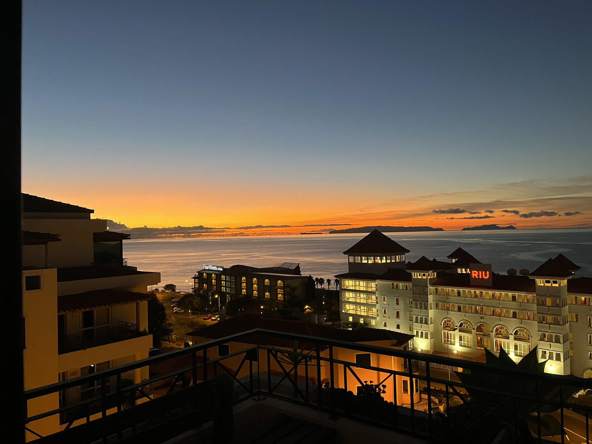
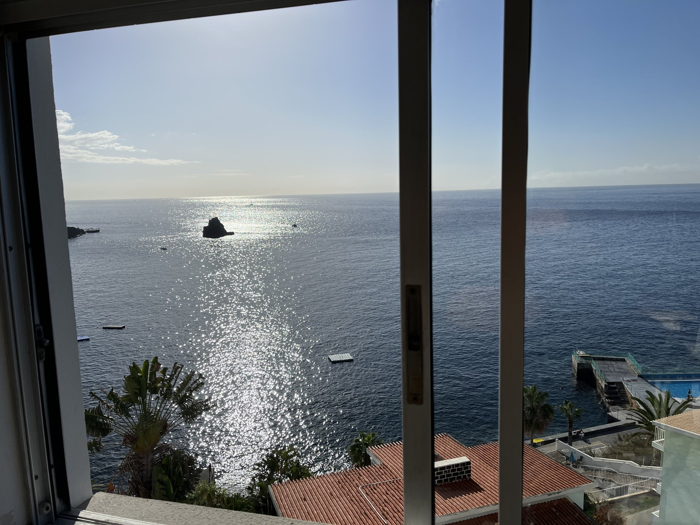
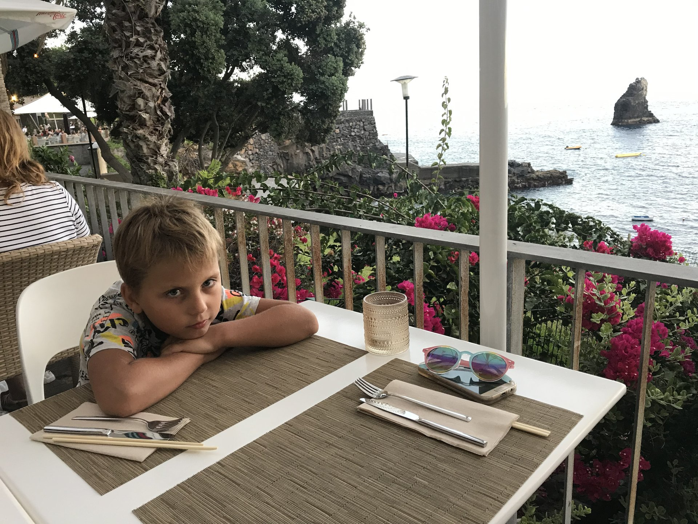

Everything you need to plan your trip — the cheapest weeks to fly, where to stay, what to eat, and why this island is unlike anywhere else in Europe.
Scan to join our Telegram bot
Get restaurant discounts, price alerts, and free guides
What's inside
Madeira at a glance
The 10 cheapest weeks to fly
Ticket prices by city — all 17 routes
Why Madeira is the safest island in Europe
Winter sun: +22°C in December
Where to stay — Lido & Caniço
Where to eat — 50% off with TheFork
Getting around the island
Best time to visit
Ready to book?

1. Madeira at a glance
+22°C
Average winter temp
€27
Flights from London
0
Venomous animals on the island
3h 55min
Flight from London
Madeira is a Portuguese island 1000 km southwest of Lisbon. It's warm year-round, safe for families, and offers some of the best-value flights in Europe.
Most visitors come in summer — but the island is arguably better in winter, when you get 22°C sunshine, empty trails, and prices that are a fraction of summer rates.
2. The 10 cheapest weeks to fly
Real Google Flights data, one-way, cheapest city per week. Book 6+ months ahead — prices quadruple in the last two weeks.
€27
6+ months ahead
€120
3 months ahead
€280
2 weeks ahead
Same flight. Same airline. Same seat. Only the booking window changed.
#
Week
From
City
1
30 Sep – 7 Oct 2026
€27
London
2
9 – 16 Nov 2026
€27
London
3
16 – 23 Nov 2026
€27
London
4
23 – 30 Nov 2026
€27
London
5
7 – 14 Dec 2026
€31
London
6
30 Nov – 7 Dec 2026
€36
London
7
2 – 9 Nov 2026
€38
London
8
12 – 19 Oct 2026
€40
London
9
4 – 11 Jan 2027
€45
London
10
11 – 18 Jan 2027
€45
London
⚠️ Warning: Christmas
Avoid 19–25 December. Prices jump to €187–245. Fly on 30–31 December i

nstead, or book for January from €45.
3. Ticket prices by city — all 17 routes
Cheapest found in a 12-month window (Sep 2026 – Aug 2027). One-way, direct where available.
This isn't marketing — it's a biological fact. Madeira has no venomous snakes, no dangerous spiders, and no scorpions. This makes it unique among Europe's warm-weather destinations.
Destination
Snakes
Spiders
Scorpions
Madeira
None
None
None
Canary Islands
None
Venomous species
Present
Cyprus
Venomous species
Venomous species
Present
Greece
Venomous species
Venomous species
Present
Malta
None
Venomous species
Rare
Italy (Sicily)
Venomous species
Venomous species
Present
Perfect for families with kids. You can hike through laurel forests, swim in natural pools, and explore the island without worrying about what's hiding in the grass.

Madeira also has one of the lowest crime rates in Portugal. Locals are welcoming, English is widely spoken, and the island's infrastructure is modern and reliable.
5. Winter sun: +22°C in December
While northern Europe sits at 0–5°C with grey skies, Madeira stays warm and sunny. December averages +19–22°C during the day, and the ocean stays around +18°C.
+22°C
December day temp
+18°C
Ocean temp
6h
Sunshine per day
€27
Flight from London
You can genuinely swim in the ocean on Christmas Day. Locals do it every year. Restaurants serve dinner outside. Flowers are still blooming.
Ideal for returning visitors. If you've been to Madeira in summer, coming back in winter is a completely different experience — quieter, cheaper, and arguably better.
6. Where to stay — Lido & Caniço
Not all parts of Madeira are equal. Two areas concentrate the best of the island:
Lido (Funchal)
The beachfront zone of Funchal. Ocean-view apartments, promenade walks, restaurants within 5 minutes. The most popular area for visitors — but you can still find quiet corners if you know where to look.
Caniço de Baixo
A short drive east of Funchal. Quieter, cheaper, with some of the best natural pools on the island. Popular with returning visitors who want to escape the crowds.
Ocean-view apartments in Lido
Direct booking. No platform fees. −10% for returning guests.
Madeira's restaurant scene is genuinely excellent — and affordable, if you know how to book.
TheFork partner restaurants offer 30–50% off the total bill. You book through the app, show the reservation at the table, and pay half. No hidden conditions.
We've collected a curated list of Madeira's best restaurants with active TheFork discounts. You'll receive it as a separate PDF after signing up.
Preview — what you'll find in the restaurant guide:
Best fresh seafood in Funchal (30–40% off)
Traditional Madeiran cuisine — espetada, bolo do caco (40% off)
Fine dining with ocean views (30% off)
Family-friendly spots with kids' menus
Wine bars and poncha stops
Where NOT to eat (tourist traps to skip)
Get the restaurant guide
15+ restaurants, active discounts, updated monthly.
Highly recommended if you want to explore beyond Funchal. Madeira's best spots — Pico do Arieiro, Porto Moniz, Ponta de São Lourenço — require a car. From €15/day, book early for peak season.
Airport transfer
Funchal airport is 20 minutes from the city center. Taxi: €25. Uber works. Aerobus: €5, 40 min.
Public transport
Buses connect Funchal to most towns but are slow. Fine for a day trip to Câmara de Lobos. Not ideal for the full island.
9. Best time to visit
Season
Weather
Crowds
Prices
Spring (Mar–May)
+20°C, flowers
Medium
Mid
Summer (Jun–Aug)
+25°C, sunny
High
High
Autumn (Sep–Nov)
+22°C, warm
Low
Best value
Winter (Dec–Feb)
+20°C, mixed
Low
Low (except NY)
Our pick: late September to mid-November. Warm weather, low crowds, cheapest flights, and the ocean is still swimmable.
Ready to book?
Ocean-view apartments in Madeira. Direct from local hosts. No platform fees. −10% for returning guests.